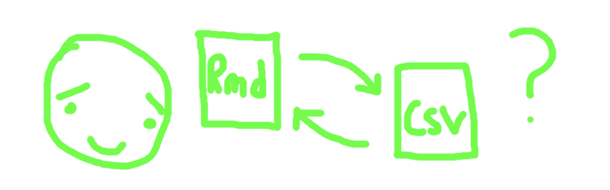

install.packages("remotes") # if not yet installed
remotes::install_github("matt-dray/chunktop")
tl;dr
I developed a convenience function for parsing chunk options out of an R Markdown document for collaborators to edit. But it doesn’t work in reverse, which is the whole point. Some notes on failure.
A very simple problem (?)
John asked about parsing chunk options from R Markdown files (Rmd), passing the content to editors, then reincorporating the edited text back into the chunk whence it came.
Well, John, have I got the solution for you. Oh wait, I absolutely don’t. Rather I’ve looked into {parsermd}, messed around and… gave up. C’est la vie.
In my hubris, I began the package {chunktop} to solve John’s problem. Goal: parse Rmd chunk options, write them to file, allow for edits, read them back in and reintegrate the strings into the chunks they came from. Then re-write the Rmd with the changes. Boom.
Spoiler: I was naïve.
A good start
My advice: don’t install {chunktop}; it’s already archived on GitHub.
It steals functionality from the excellent {parsermd} package to grab Rmd chunk options using the very appropriate rmd_get_options() function.
The package contains a demo Rmd for testing purposes.
path <- system.file("extdata/demo1.Rmd", package = "chunktop")You can read in this demo Rmd with parsermd::parse_rmd(), which is actually a little abstract syntax tree (AST) that demonstrates the hierarchy of the page and contains all the data.
if (!require("parsermd")) install.packages(parsermd)Loading required package: parsermd(rmd <- parse_rmd(path))├── YAML [1 lines]
└── Heading [h1] - A header
├── Chunk [r, 1 opt, 1 lines] - chunk1
└── Heading [h2] - A subheader
├── Chunk [r, 2 opts, 1 lines] - chunk2
├── Markdown [2 lines]
├── Chunk [r, 1 lines] - chunk3
└── Chunk [r, 2 opts, 1 lines] - chunk4And we can take a look at the lines in the Rmd doc.
(rmd_doc <- parsermd::as_document(rmd)) [1] "---"
[2] "title: Test"
[3] "---"
[4] ""
[5] "# A header"
[6] ""
[7] "```{r chunk1, eval = FALSE}"
[8] "1 + 1"
[9] "```"
[10] ""
[11] "## A subheader"
[12] ""
[13] "```{r chunk2, fig.cap = \"I am a fig caption.\", fig.height = 4}"
[14] "plot(mtcars$mpg, mtcars$cyl)"
[15] "```"
[16] ""
[17] "Some text."
[18] ""
[19] ""
[20] "```{r chunk3}"
[21] "plot(mtcars$mpg, mtcars$disp"
[22] "```"
[23] ""
[24] "```{r chunk4, fig.cap = \"I am another fig caption.\", eval = TRUE}"
[25] "plot(mtcars$mpg, mtcars$drat)"
[26] "```"
[27] "" So it contains a bunch of chunks with various options.
So, here’s as far as I got. First off, given our Rmd file, we can use get_chunktop() to read the chunk options of interest using {parsermd} and stick them a nice little list. Trivially.
library(chunktop)
(chunktop_list <- get_chunktop(rmd_file = path, opts = c("fig.cap", "eval")))$chunk1
$chunk1$eval
[1] "FALSE"
$chunk2
$chunk2$fig.cap
[1] "\"I am a fig caption.\""
$chunk4
$chunk4$fig.cap
[1] "\"I am another fig caption.\""
$chunk4$eval
[1] "TRUE"Which is trivially massaged into a data.frame.
(chunktop_df <- chunktop_to_df(chunktop_list)) chunk_name option_name option_value
1 chunk1 eval FALSE
2 chunk2 fig.cap "I am a fig caption."
3 chunk4 fig.cap "I am another fig caption."
4 chunk4 eval TRUEWhich is trivially written to a CSV to share with your colleagues for editing.
csv_file <- tempfile(fileext = ".csv")
write.csv(chunktop_df, csv_file, row.names = FALSE)Which is trivially read back into R.
(chunktop_df2 <- read.csv(csv_file)) chunk_name option_name option_value
1 chunk1 eval FALSE
2 chunk2 fig.cap "I am a fig caption."
3 chunk4 fig.cap "I am another fig caption."
4 chunk4 eval TRUEWhich is trivially converted back into a list.
(chunktop_list2 <- df_to_chunktop(chunktop_df2))$chunk1
$chunk1$eval
[1] "FALSE"
$chunk2
$chunk2$fig.cap
[1] "\"I am a fig caption.\""
$chunk4
$chunk4$fig.cap
[1] "\"I am another fig caption.\""
$chunk4$eval
[1] "TRUE"And then we trivially, um, well, I don’t know, actually. I just assumed there would be an elegant way to convert the listed options back into the chunk options.
The function parsermd::rmd_set_options() exists, but appears to set options for all chunks, not selected options. Maybe I misunderstood, let me know.
For sure you could do a thing where you parse the strings out of the Rmd and replace them with the new option values. You are welcome to do that, friend.
Descent into masochism
Anyway, having implied that I am too lazy to do that, I actually tried something much more procastinatory when I hit a brick wall. Enjoy this bonus content.
I wondered if I could just… extract the chunk options from the original Rmd myself, dependency-free. For ‘fun’.
But I turned I into a sort of unhinged code golf. Well, maybe ‘code wild-goose-chase’. The challenge: is it possible to extract chunk options from an arbitrary Rmd using only base R in a single base-R pipe (|>) chain? Haha, of course.
First, I’ve got a few input checks that I’ve put into a .check_inputs() so that it causes less clutter in the main function.
Click for function to check inputs
.check_inputs <- function(rmd_lines, engine, yaml_out) {
if (!inherits(rmd_lines, "character")) {
stop("Argument 'rmd_lines' must be a character vector.", call. = FALSE)
}
if (engine != "r") {
stop("For now, argument 'engine' must be 'r'.", call. = FALSE)
}
if (!is.null(yaml_out) & !inherits(yaml_out, "character")) {
stop("Argument 'yaml_out' must be NULL or character.", call. = FALSE)
}
if (!is.null(yaml_out)) {
if (tools::file_ext(yaml_out) != "yaml") {
stop("Argument 'yaml_out' must have extension '.yaml'.", call. = FALSE)
}
if (!dir.exists(dirname(yaml_out))) {
stop("The directory in 'yaml_out' does not exist.", call. = FALSE)
}
}
}So here’s an overengineered grab_chunktop() function that extracts Rmd chunk options.
grab_chunktop <- function(rmd_lines, engine = "r", yaml_out = NULL) {
.check_inputs(rmd_lines, engine, yaml_out)
rmd_lines[grep("```\\{", rmd_lines)] |> # isolate Rmd chunks
gsub(paste0("```\\{", engine , " |\\}$"), "", x = _) |> # retain options
strsplit(", ") |> # list of chunks, split by comas
(\(chunk_str) {
setNames(object = chunk_str, sapply(chunk_str, "[[", 1)) # name-value
})() |> # name the list elements after chunks
sapply("[", -1) |> # forget first element (engine)
lapply( # split options/values into nested list under named chunk
\(opt_str) {
strsplit(opt_str, "=") |> # "eval=TRUE" to "eval" and "TRUE"
(\(opt_str) { # first element to name
setNames(object = opt_str, trimws(sapply(opt_str, "[[", 1)))}
)() |>
sapply("[", -1) |> # now remove first element
trimws() |>
as.list() |>
type.convert(as.is = TRUE) # make sure "1" becomes 1
}
)
}Absolutely disgusting. But it works!
grab_chunktop(rmd_doc)$chunk1
$chunk1$eval
[1] FALSE
$chunk2
$chunk2$fig.cap
[1] "\"I am a fig caption.\""
$chunk2$fig.height
[1] 4
$chunk3
list()
$chunk4
$chunk4$fig.cap
[1] "\"I am another fig caption.\""
$chunk4$eval
[1] TRUENote the exclusive use of |> base pipe, _ placeholder, \() anonymous function and ()() ‘dog’s balls’. Welcome to base R circa 2023.
I’m telling you this works and you can see that’s the case. But gosh bless you if you actually try to grok that code by eye.
Brief grief
Nothing good has come of this. I just have more respect for {parsermd}. But here’s a brief timeline of my activites on this task:
- there’s no way this isn’t trivial (denial)
- I can’t believe I can’t batter {parsermd} into doing this (anger)
- I’ll start a package and see where we get (bargaining)
- what if I simply ignore the package and lark about with base R instead (depression)
- I’ll just write a blog post and move on (acceptance)
Don’t worry, you only lost a few braincells reading this. I lost an afternoon, woe is me.
Environment
Session info
Last rendered: 2023-09-16 23:24:51 BSTR version 4.3.1 (2023-06-16)
Platform: aarch64-apple-darwin20 (64-bit)
Running under: macOS Ventura 13.2.1
Matrix products: default
BLAS: /Library/Frameworks/R.framework/Versions/4.3-arm64/Resources/lib/libRblas.0.dylib
LAPACK: /Library/Frameworks/R.framework/Versions/4.3-arm64/Resources/lib/libRlapack.dylib; LAPACK version 3.11.0
locale:
[1] en_US.UTF-8/en_US.UTF-8/en_US.UTF-8/C/en_US.UTF-8/en_US.UTF-8
time zone: Europe/London
tzcode source: internal
attached base packages:
[1] stats graphics grDevices utils datasets methods base
other attached packages:
[1] chunktop_0.0.0.9000 parsermd_0.1.2
loaded via a namespace (and not attached):
[1] vctrs_0.6.3 cli_3.6.1 knitr_1.43.1 rlang_1.1.1
[5] xfun_0.39 purrr_1.0.1 jsonlite_1.8.7 glue_1.6.2
[9] backports_1.4.1 htmltools_0.5.5 hms_1.1.3 fansi_1.0.4
[13] rmarkdown_2.23 evaluate_0.21 tibble_3.2.1 tzdb_0.4.0
[17] fastmap_1.1.1 yaml_2.3.7 lifecycle_1.0.3 compiler_4.3.1
[21] htmlwidgets_1.6.2 Rcpp_1.0.11 pkgconfig_2.0.3 rstudioapi_0.15.0
[25] digest_0.6.33 R6_2.5.1 tidyselect_1.2.0 readr_2.1.4
[29] utf8_1.2.3 pillar_1.9.0 magrittr_2.0.3 checkmate_2.2.0
[33] withr_2.5.0 tools_4.3.1 Reuse
CC BY-NC-SA 4.0